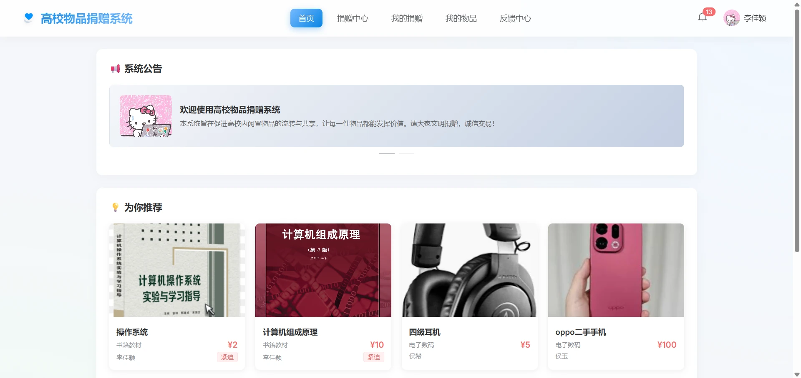

核心列表查询耗时
联合索引 + 分页查询优化
← 返回项目
Donation System
高校物品捐赠系统
围绕校园闲置物品流转效率低的问题，基于 Spring Boot + MySQL 设计并实现了一套完整的物品捐赠管理系统。负责系统整体架构设计、数据库建模及核心业务逻辑实现，通过 SQL 性能优化将核心列表查询由 3.2 秒降至 0.4 秒。

// 分层架构设计
Controller → Service → DAO
├── 用户模块
├── 物品模块
├── 订单模块
└── 分类模块
项目数据概览
把系统规模、业务复杂度和优化结果放在首屏可读位置
数据库表
覆盖用户、物品、交易、通知等模块用户角色
用户、管理员、志愿者权限隔离物品主状态
从发布、审核到交付互评全流程追踪技术栈
后端 · 前端 · 数据库 · 工具
后端
Java / Spring Boot 3.2.3 / Spring Security / MyBatis-Plus / JWT / WebSocket (SockJS/STOMP)
前端
Vue3 + Vite / Vue Router / Pinia / Axios / Element Plus / ECharts
数据库
MySQL 8.0 (InnoDB) / Redis（缓存热点数据）
工具
Git / Maven / Postman / IntelliJ IDEA / JDK 17
系统架构
系统整体采用前后端分离的 B/S 架构，后端遵循 Controller → Service → Mapper 三层分层设计。前端通过 Axios 调用 RESTful API，使用 JWT 进行无状态鉴权，Pinia 管理前端状态，路由守卫实现权限隔离。
基本流程：用户通过浏览器访问 Vue3 前端页面 → 前端调用后端 RESTful API（携带 JWT Token）→ Controller 层接收请求并校验参数 → Service 层处理业务逻辑 → Mapper 层与 MySQL 交互 → Redis 缓存热点数据减少数据库压力 → 系统返回处理结果并在前端渲染展示。
用户请求
Controller
Service
Mapper
MySQL / Redis
数据库设计
系统共设计 13 张数据库表，覆盖用户管理、物品流转、交易交付、通知反馈等全业务流程。存储引擎统一选用 InnoDB，支持事务与行级锁。
用户相关
sys_user（3 种角色）· sys_tag · user_tag · user_browse_history
物品相关
donation_item（6 种状态）· category · announcement · item_comment
业务相关
donation_request · donation_transaction（4 种状态）· transaction_review（1–10 分互评）
通知反馈
notification · feedback
核心功能模块
覆盖捐赠全流程的 10 大模块
用户模块
注册（管理员审核）、BCrypt 加密、JWT 鉴权、Pinia 状态管理、路由守卫权限隔离
标签系统
个性标签选择 → 用户画像构建 → 协同过滤推荐基础
物品模块
发布（多图上传）、审核流程、6 种状态流转（待审核→展示中→未通过→已下架→已匹配→已捐出→已完成）
推荐算法
基于用户标签 + 相似用户 + 浏览记录 → 协同过滤 → Redis 缓存推荐结果
捐赠请求
用户申请物品 → 捐赠者从请求列表选择受赠方
交易交付
2 种交付方式（学校收纳处 / 自行安排）、4 种状态（待捐出→已捐出→已收到→已完成）
互评信用
双方互评 1–10 分 → 信用资料卡 → Redis 缓存
通知系统
WebSocket（SockJS/STOMP）实时推送 + 通知表持久化
反馈管理
用户提交意见 → 管理员回复处理
管理统计
ECharts 可视化报表 · 多维数据统计展示
捐赠状态流转
从物品发布到交易闭环，每一步都有明确状态和责任方
待审核
用户发布物品，管理员校验信息完整性。
展示中
审核通过后进入列表，支持搜索、分类和推荐。
已申请
受赠方提交申请，捐赠方查看请求列表。
已匹配
捐赠方选择受赠方，系统生成交易记录。
待交付
双方选择学校收纳处或线下自取方式。
已完成
确认收货后完成交易，通知双方处理结果。
互评信用
交易双方评分，更新信用资料并缓存热点数据。
## 项目总结
通过该项目，我完整经历了从需求分析、数据库设计（13 张表）、接口开发到系统部署的全流程。重点攻克了多表关联查询性能瓶颈、基于标签的协同过滤推荐算法以及 WebSocket 实时通知等关键技术难点，为校园闲置物品流转提供了完整的技术解决方案。
查看源码 →